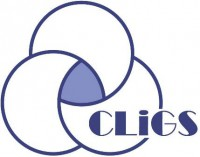
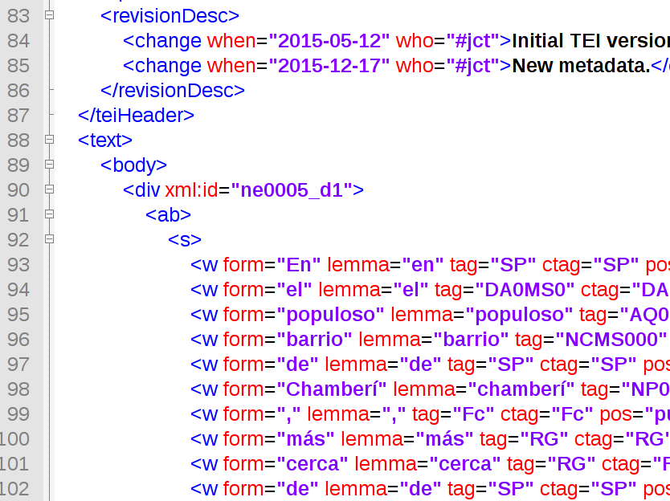

<!doctype html>
<html lang="en">
<head>
<meta charset="utf-8">
<title>CLiGS textbox</title>
<meta name="author" content="Christof Schöch">
<meta name="description" content="Slides">
<meta name="apple-mobile-web-app-capable" content="yes">
<meta name="apple-mobile-web-app-status-bar-style" content="black-translucent">
<meta name="viewport" content="width=device-width, initial-scale=1.0, maximum-scale=1.0, user-scalable=no, minimal-ui">
<link rel="stylesheet" href="css/reveal.css">
<link rel="stylesheet" href="css/theme/simple.css" id="theme">
<link rel="stylesheet" href="lib/css/zenburn.css">
<script>
var link = document.createElement( 'link' );
link.rel = 'stylesheet';
link.type = 'text/css';
link.href = window.location.search.match( /print-pdf/gi ) ? 'css/print/pdf.css' : 'css/print/paper.css';
document.getElementsByTagName( 'head' )[0].appendChild( link );
</script>
<!--[if lt IE 9]>
<script src="lib/js/html5shiv.js"></script>
<![endif]-->
</head>

<body>
<div class="reveal">
<div class="slides">
<section data-markdown="" data-separator="^\n---\n" data-separator-vertical="^\n--\n" data-charset="utf-8">
<script type="text/template">

<!--  vvvvv THIS IS WHERE THE CONTENT GOES! vvvvvvv  -->

### CLiGS-textbox – Textbox: corpus literarios entre 1830 y 1940
<hr/>
<br/>
<br/>
<small><b>José Calvo Tello, Ulrike Henny, Christof Schöch</b></small>
<br/>
<br/>
<br/>
<small>Hispanistentag, München, Marzo 2017</small>
<br/>
<br/>
<small>Diapositivas en: http://christofs.github.io/textbox-es</small>
<small>Corpus textbox en: https://github.com/cligs/textbox</small>
<br/>
<hr/>
<p></img>&nbsp;&nbsp;&nbsp;&nbsp;&nbsp;&nbsp;</img>&nbsp;&nbsp;&nbsp;&nbsp;&nbsp;&nbsp;</img></p>


---
## Índice
<br/>
* ¿Qué es textbox?
* Colecciones de texto
* Edición de los textos
* Estrategia de publicación
* Resumen


---
# ¿Qué es textbox?

--
### textbox
<br/>
* Canal de publicación de los corpus del grupo CLiGS
* https://github.com/cligs/textbox
* Colecciones de textos literarios en lenguas romances
* Actualmente seis colecciones en español, francés y portugués
* Características: Reutilización, buenas prácticas, posibilidad de *feedback*, escaparate

--
### Escaparate del escaparate
<a href="http://zde.digital-humanities.de/contrast/"></img></a>
<small>Visulización contrastiva (Peter Fankhauser)</small>


---
# Colecciones de textos

--
### Colecciones
<br/>
* _Collection of 19th Century Spanish-American Novels (1880-1916)_
* _Corpus of Spanish Novel from 1880-1940_
* _Collection de nouvelles françaises du dix-neuvième siècle_
* _Collection de romans français du dix-neuvième siècle_
* _Collection de pièces the théâtre français du dix-septième siècle_
* _Collection of 19th Century Portuguese Novels (1840-1910)_


--
### Collection of 19th Century Spanish-American Novels (1880-1916)
<br/>
* Objetivo: Corpus de comparación para análisis estilométricos
* Selección: tres novelas de ocho autores de Argentina y México
* Tamaño: 24 novelas, 1.1 millones de tokens
* Autores: Bunge, Cambaceres, Cuéllar, Frías, Gutiérrez, Holmberg, Payró, Sicardi

--
### Corpus of Spanish Novel from 1880-1940 
<br/>
* Objetivo: Corpus de comparación para análisis estilométricos
* Selección: tres novelas de ocho autores españoles
* Tamaño: 24 novelas, 1.8 millones de tokens
* Autores: Galdós, Blasco Ibáñez, Miró, Bazán, Clarín, Pereda, Picón, Valera

---
# Edición de los textos

--
### Formatos
<br/>
* Origen 
	* Diversas fuentes y formatos
	* EPUB, HTML, PDF, impreso
	* Conversión mediante programas Python
* Maestro
	* XML-TEI
* Derivados
	* texto plano (UTF-8)
	* version anotada linguísticamente (con Freeling, en formato XML)
	* 'zwischenformat' (obras de teatro)
	* Versión de lectura (PDF, novelas)

--
### Texto en XML-TEI
<br/>
<a href="img/xml-tei.png"></img></a>


--
### Metadatos en XML-TEI
<br/>
<a href="img/metadata-tei.png"></img></a>


--
### Metadatos, estructura y anotación en XML
<br/>
<a href="img/anotacion.png"></img></a>
	

--
### Metadatos en CSV
<br/>
<a href="img/tei-example.png"></img></a>

--
## Control de calidad
<br/>
* Fuentes heterogeneas de diversa calidad
* Revisión: 
	* texto completo (manual)
	* XML bien formado y validado (CLiGS-Schema)
	* Spellcheck (corrector en Python + lista de nombres propios, extranjerismos) 


---
# Estrategias de publicación: <br/>GitHub + Zenodo

--
### textbox en GitHub
<a href="https://github.com/cligs/textbox"></img></a>

--
### Funciones de Github
<br/>
* Edición colaborativa de los textos
* Posibilidad de comunicación de errores o sugerencias ("issues")
* Control de versiones: cada cambio es versionado ("commits")
* Publicación: los textos están accesibles libremente (CC-0/CC_BY)

--
### textbox en Zenodo
<a href="https://zenodo.org/record/376666"></img></a>

--
### Funciones de Zenodo
<br/>
* Una versión concreta ("release") y completa de textbox es archivada
* Esta versión está identificada de manera unívoca (DOI); citable
* Datos accesibles a largo plazo (Zenodo > OpenAire > CERN) 


---
# Resumen<br/>

--
### Características
<br/>
* 6 colecciones literarias de lenguas romances
* 2 colecciones de literatura en español
* Diferentes formatos (investigación y lectura)
* Colaborativo, abierto y transparente
* Sostenible y citable
* Gratuito
* Futuras versiones


---
<br/>
<br/>
## ¡Gracias por la atención! 
<br/>
<br/>
<br/>
<br/>
<br/>
<br/>
<br/>
<small>CLiGS, 2017</small>
<br/>
<small><http://cligs.hypotheses.org></small>
<br/>
<small><a href="https://creativecommons.org/licenses/by/4.0/">CC-BY 4.0</a></small>
<br/>


<!--^^^^^^^ DON'T TOUCH UNLESS YOU KNOW WHAT YOU'RE DOING :-) ^^^^^^^-->

</script>
</section>
</div>
</div>

<script src="lib/js/head.min.js"></script>
<script src="js/reveal.js"></script>
<script>
// Full list of configuration options available at:
// https://github.com/hakimel/reveal.js#configuration
Reveal.initialize({
    controls: true,
    progress: true,
    history: true,
    center: true,
    transition: 'slide', // none/fade/slide/convex/concave/zoom
    // Optional reveal.js plugins
    dependencies: [
        { src: 'lib/js/classList.js', condition: function() { return !document.body.classList; } },
        { src: 'plugin/markdown/marked.js', condition: function() { return !!document.querySelector( '[data-markdown]' ); } },
        { src: 'plugin/markdown/markdown.js', condition: function() { return !!document.querySelector( '[data-markdown]' ); } },
        { src: 'plugin/highlight/highlight.js', async: true, callback: function() { hljs.initHighlightingOnLoad(); } },
        { src: 'plugin/zoom-js/zoom.js', async: true },
        { src: 'plugin/notes/notes.js', async: true }
        ]
    });
</script>
</body>
</html>
